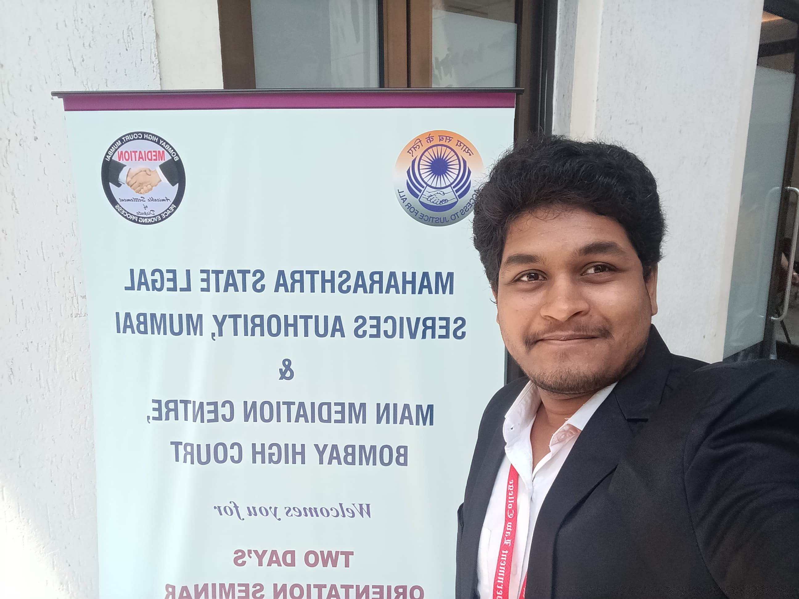

About
Chakradhar founded and independently runs The Finvocates, including ComplAI. He is presently a Compliance Trainee in the CCO's team at a small finance bank, and a law student at Government Law College, Mumbai.
Currently
In the CCO's team since the nascent stage of the bank (04 December 2023 – present), working across:
Assets / Business vertical — compliances under the RBI Master Directions on Fraud Risk Management, and Income Recognition & Asset Classification.
Liabilities / Customers vertical — operating-framework support across Customer Service, Information Security and Branch Compliance Reviews.
KYC & AML vertical — regulatory information dissemination support on the RBI Master Direction on KYC.
Regulatory Reporting vertical — hands-on execution support in fraud reporting across the organisation, and coordination with the RBI upon expansion of touchpoints.
Beyond the four verticals: automating compliance workflows on the PwC Compliance Monitoring Tool, MS Power Automate and MS Copilot; drafting board agendas and RBI correspondence for approvals, licences, management changes, investment intimations and board updates; and acting as point of contact for external vendors, advisory firms, consultants and law firms, on payments for structured deals.
Timeline
Recognition
Bootstrapped and fully automated The Finvocates LinkedIn page from the ground up — now past 1,100 followers and indexed #1 for the keyword "The Finvocates."
Silver (2022) and Bronze (2021) awards, Queen's Commonwealth Essay Competition, an international competition.
Invitee to Pariksha Pe Charcha 2020, hosted by the Prime Minister's Office — one of the top 0.4% among 2.63 lakh applicants nationally.